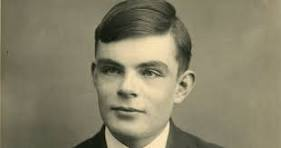
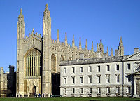
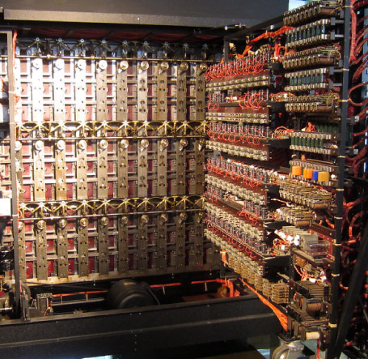
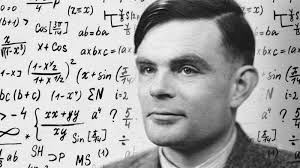
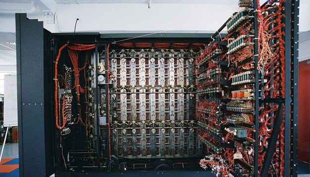
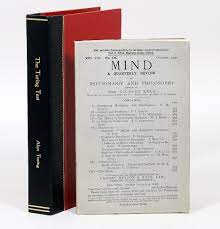
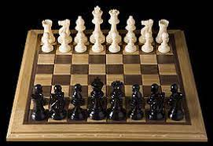
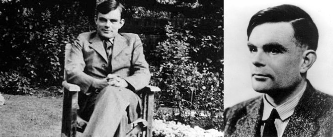
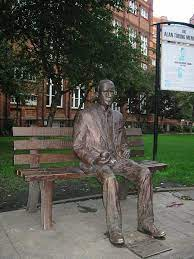

Biografia de Alan Turin
1912 1922-1930 1939 1947 1948 1950 1952 1954
1912
Nacimiento

Alan Mathison Turing, criptógrafo británico nacido el 23 de junio de 1912 en Londres.
1922-1930
Estudios

Estudia en la preparatoria de Hazelhurst. Ingresa en el internado de Sherborne en Dorset. Tras graduarse en la Universidad de Cambridge, se traslada a Estados Unidos a la Universidad de Princeton
1936
Algoritmos

Formalizó los conceptos de algoritmo y la computación: la máquina de Turing. Formula su versión de la tesis de Church Turing
1939
Enigma

Durante la Segunda Guerra Mundial trabajó para descifrar los códigos nazis, especialmente los de la máquina Enigma. Fue director de la sección Naval Enigma.
1947
Fusión Fauget

Comienza a trabajar en el diseño del ACE (Automatic Computer Engine, o motor de computación automática). Posteriormente creó el Abbreviated Conde Instruction, el cual dio origen a los lenguajes de programación.
1948
Trabaja en Software

Trabajó en el software de una de las primeras computadoras reales, la Manchester Mark I.
1950
publicacion

Publica Computing machinery and intelligence.
1952
Ajedrez

Intenta implementar un programa de ajedrez en el Ferranti Mark I pero el ordenador no pudo ejecutar el programa por falta de potencia.
1952
Inicia su proceso

Lo procesan por homosexualidad
1954
Fallece

Fallece el 7 de junio de 1954 en Wilmslow, Reino Unido, a los 41 años de edad.
Regresar al inicio